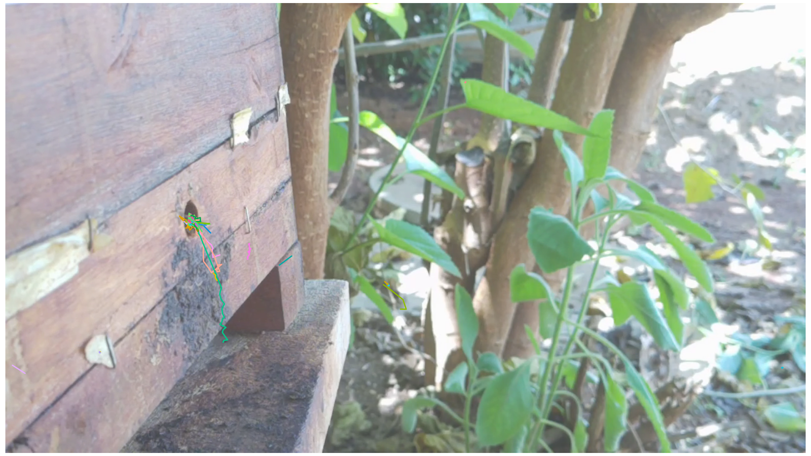
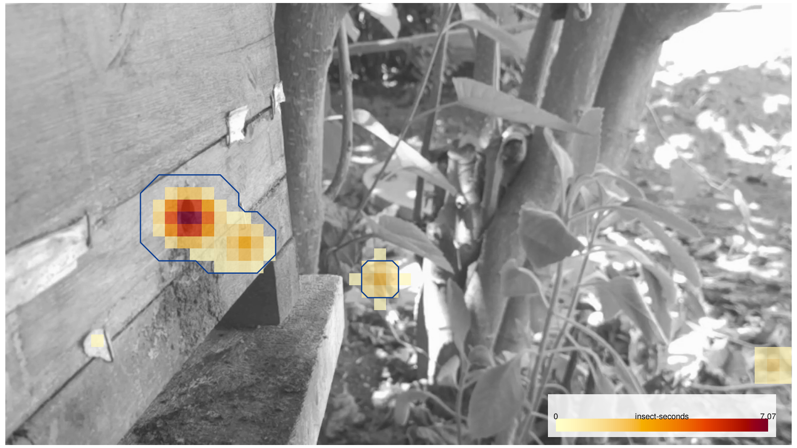
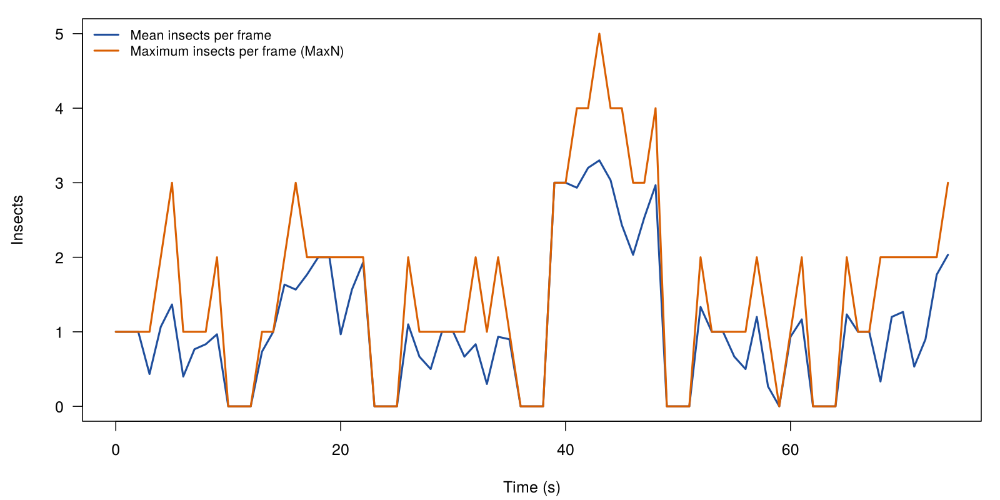
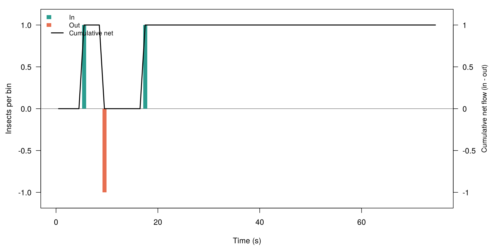

video_validacao_mota_30fps.mp4
| Video | video_validacao_mota_30fps.mp4 |
|---|---|
| Analysed | 0- 75 s, 2,250 frames at 30 frames per second, 1280 x 720 pixels |
| Detector | yolo (melipona_yolo26n_fp32.onnx) |
| Tracker | bytetrack, fragments joined |
| Detections | 3,332 |
| Tracks | 36 (median duration 1.77 s) |
| Insects per frame | mean 1.06, maximum 5 |
| Entrance | 2 in, 1 out |
| Hot-spot cells | 78 |
Annotated video
video_validacao_mota_30fps_tracked.mp4
Figures




Tables
- activity.csv
- detections.csv
- entrance_counts.csv
- entrance_events.csv
- entrance_zone.csv
- heatmap.csv
- summary.csv
- track_summary.csv
- tracks.csv
Settings and software versions: settings.json.